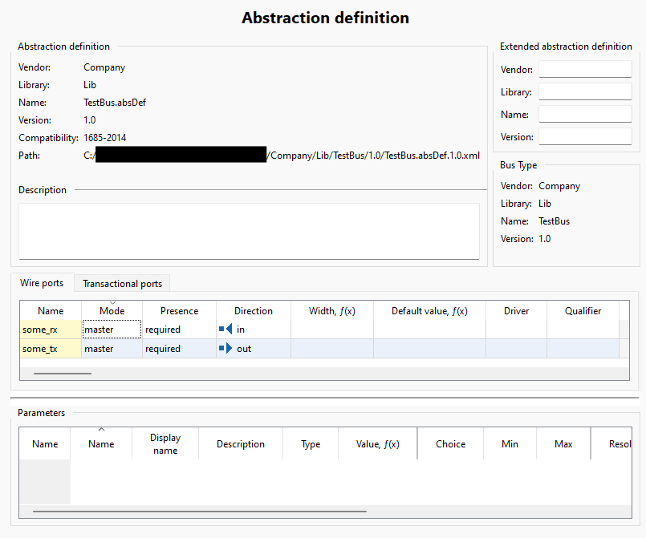
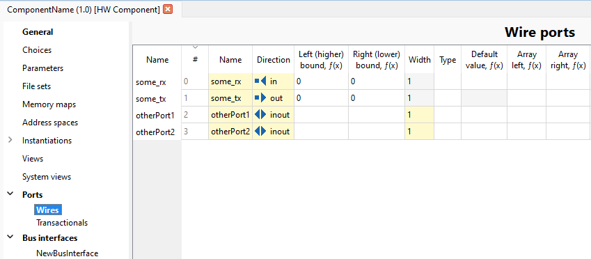
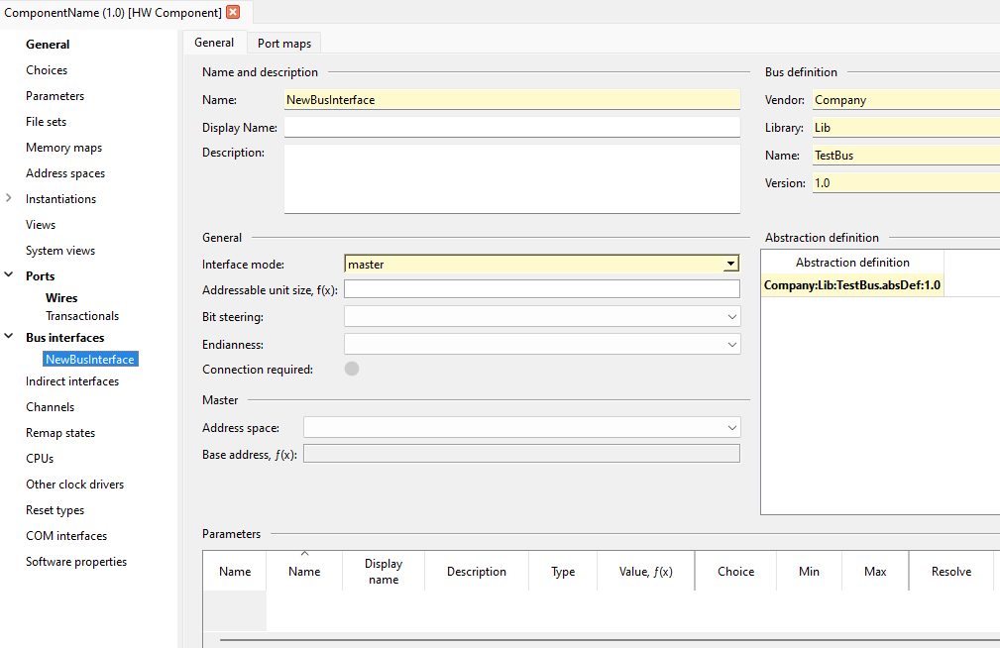
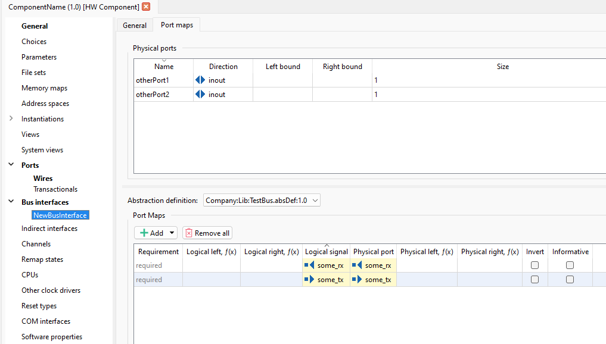

|
Kactus2
Kactus2 reference guide
|
|
Kactus2
Kactus2 reference guide
|
Here are some simple examples on how to use Kactus2 via Python scripting.
IP-XACT libraries can be set either in the GUI or via Python. Currently configured library paths can be listed with PythonAPI::getAllLibraryPaths or PythonAPI::getActiveLibraryPaths, and PythonAPI::getDefaultLibraryPath (for the current default), e.g.;
Libraries can be added with PythonAPI::addLibraryPath and removed with PythonAPI::removeLibraryPath. Libraries can be set in bulk with PythonAPI::setLibraryPaths, which will add and set active all paths that are given as a list in the function arguments. PythonAPI::setDefaultLibraryPath sets the default location.
Creating a component is done with PythonAPI::createComponent. As parameters, it takes the VLNV (vendor, library, name, version) of the component to be created, one parameter each, and the IP-XACT standard revision to use (PythonAPI::StdRev). Example:
The created component will be placed in the default library path.
The IP-XACT standard revision of a component can be checked with PythonAPI::getComponentStdRevision :
Similarly to creating components, a design can be created with PythonAPI::createDesign:
The IP-XACT standard revision of a design can also be checked with PythonAPI::getDesignStdRevision.
Creating a design will create 1) The design itself and 2) A top-level component for the design. The top-level component VLNV will become vendor:library:name:version and the design VLNV will become vendor:library:name.design:version. The design will be created in the default library.
The component can then be instantiated and added to the design. Creating a design will automatically set it as active, but in any other case the design must be set active with PythonAPI::openDesign, which takes the design VLNV as a vlnvString (vendor:library:name:version).
The component can be instantiated and added to the design with PythonAPI::addComponentInstance, which also takes a vlnvstring and the instance name:
Changes to a design are saved with PythonAPI::saveDesign, which will write the changes to disk. The currently open design can be closed with PythonAPI::closeOpenDesign:
Modifying a component requires that the component is opened first:
Now any changes made will be made to the opened component.
Any modifications to component memory maps are made through KactusAPI interfaces. Memory maps can be modified via MemoryMapInterface, and it can be accessed with PythonAPI::getMapInterface. Address blocks, registers and fields can be modified in a similar way.
A new map can be added with MemoryMapInterface::addMemoryMap. It takes an index as first parameter and the name as the second parameter. The index can be in the range [0, number of memory maps in the component], the easiest thing to do is always use index 0.
The memory map can then be modified with the different functions of MemoryMapInterface, e.g. to set the address unit bits:
The address block interface can be accessed with MemoryMapInterface::getAddressBlockInterface. The interface must first be pointed to the memory map whose address blocks are to be edited:
A new address block can be added with AddressBlockInterface::addBlock. Its properties can be accessed in the same way as with memory maps:
Register and field interfaces are accessed through AddressBlockInterface::getSubInterface and RegisterInterface::getSubInterface respectively. Apart from that they work as the previous interfaces. First, the available registers (the registers of the created address block) must be set for the register interface:
Then the register properties can be manipulated:
Field editing is done in a similar fashion. First, the available fields must be set for the interface:
After that fields can be edited through the field interface:
The components bus interfaces are directly accessible through the BusInterfaceInterface class, after PythonAPI::openComponent has been called.
In this example, we'll first create some ports for our component. Then, we'll create a bus interface and some portmaps for it. For mapping ports, we need a bus- and abstraction definition, which cannot be created via the python API, but can be created in the GUI.
The bus definition created for this example is not modified in any way and its VLNV is Company:Lib:TestBus:1.0. The abstraction defintion is Company:Lib:TestBus.absDef:1.0. Here's the abstraction definition used: 
Let's start by creating the physical component ports:
Now, let's create the bus interface:
Before creating portmaps, the bus interface needs a bus type and at least one abstraction type. These are references to the bus definition and abstraction definition. In this example we'll use Company:Lib:TestBus:1.0 and Company:Lib:TestBus.absDef:1.0 :
Then, let's setup the portmaps. We'll simply map the logical "some_rx" to physical and the same with "some_tx". First, we need to setup the AbstractionTypeInterface, through which portmaps can be accessed. Abstraction types and portmaps don't have names, so indices are used to select the wanted abstraction type or portmap:
Resulting ports shown in GUI after running script: 
The created bus interface: 
And the portmaps: 
Assuming we have a component with a bus interface with portmaps (like in the previous example), to print information of the physical ports a bus interface is using, we can do the following:
Then the individual ports can be accessed with KactusAPI::PortsInterface:
With the previous example, the above should print
Notice how the previously added extra ports otherPort1 and otherPort2 don't show up, because they weren't mapped to any logical signals.